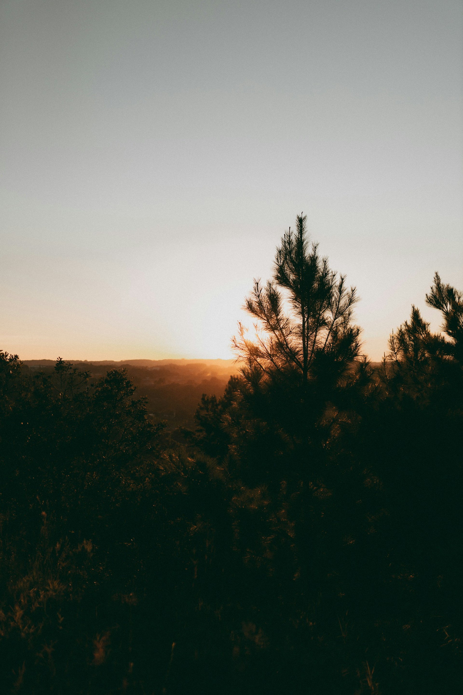

Фритрек и нулевой спринт: Подготовка к работе

Предвкушение
Это было самое начало пути. На этом этапе важно было проникнуться основами и настроиться на учёбу. И, возможно, подумать, как новые знания могут повлиять на ваше будущее.
Начало обучения — это как посадка семени в плодородную почву: от того, насколько тщательно мы ухаживаем за ним — поливаем знанием, удобряем опытом и защищаем от бурь невежественности — зависит, насколько высоким и плодовитым окажется наше дерево мудрости в будущем.